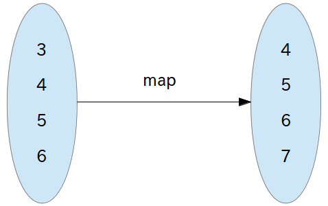
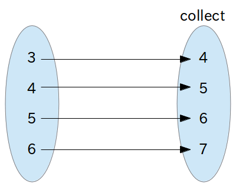
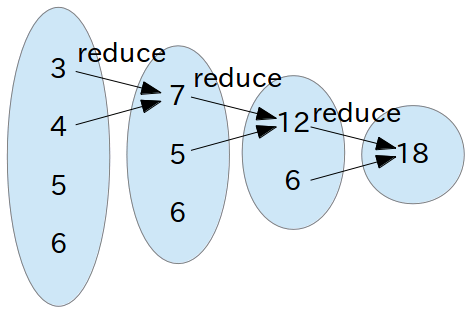

map と collect、reduce と inject ―― 名前の違いに見る発想の違い
書いた人 : 郡司啓
はじめに
「あなたは map 派？それとも collect 派？」
Rubyist であれば、一度はこんな質問を受けたことがあるのではないでしょうか。たとえば Rubyist Magazine の過去の記事を紐解くと、まつもとゆきひろさんのインタビューや角谷信太郎さんのインタビューでその話題が出ていますね。
ここでいう map と collect とは、Enumerable#map メソッドと Enumerable#collect メソッドのことですが、リファレンスマニュアルを見ていただくと分かる通り、どちらも全く同じ動作をするメソッドになります。
そして Enumerable モジュールには reduce と inject というメソッドもあります。「map 派？collect 派？」という質問よりは聞かれる可能性が低いと思いますが、reduce 派か inject 派かを問われることがあるかもしれません。リファレンスマニュアルで Enumerable#reduce メソッドと Enumerable#inject メソッドを見ると、やはりこの二つのメソッドは全く同じ動作をします。
それでは、なぜ同じ機能に違う名前が付いているのでしょうか。今回の記事では、map と collect、reduce と inject それぞれの名前の由来を紐解きつつ、その発想の違いを見ていきたいと思います。
名前の由来となった二つのプログラミング言語、Lisp と Smalltalk
Ruby は様々なプログラミング言語の「良いとこ取り」をした言語だ、と Ruby の作者であるまつもとゆきひろさんもどこかでおっしゃっていたかと思いますが、今回取り上げる 4 つのメソッドの名前は、Lisp と Smalltalk という 2 つのプログラミング言語が由来となっています。具体的には map と reduce が Lisp 由来、collect と inject が Smalltalk 由来となります。
Lisp と Smalltalk がどのようなプログラミング言語なのか、という詳細についての説明はここではしませんが、書いたコードの動作の確認のためにはそれぞれのプログラミング言語の処理系が必要になりますね。そこで、下準備として Lisp は GNU CLISP という Common Lisp の処理系1を、Smalltalk は GNU Smalltalk という処理系2をインストールして利用することにします。Debian 系の Linux ディストリビューションを利用しているなら、
$ sudo apt-get install clispで GNU CLISP を、
$ sudo apt-get install gnu-smalltalkで GNU Smalltalk をインストールすることができます。他の OS を利用している方でも、上記二つの処理系はインストールパッケージが用意されていると思いますので、Google などの検索エンジンでインストール手順を調べてインストールしてみてください。
準備ができたら、Ruby で書いたコードとそれぞれのプログラミング言語のコードを比較してみましょう。
Lisp の map
まずは「ある配列の要素を全て 1 だけ増加させた配列が欲しい」という場合です。Ruby では、Enumerable#map メソッドを使って次のように書くことができますよね。irb を使って動作を確認してみましょう。
> [3, 4, 5, 6].map {|i| i + 1 }
=> [4, 5, 6, 7]それでは、これと同じことを実現するコードを Lisp でも書いてみましょう。上記の Ruby で書いた
[3, 4, 5, 6].map {|i| i + 1 }というコードを Lisp (Common Lisp) で書くと、次のようなコードになります。
(map 'list (lambda (i) (+ i 1)) '(3 4 5 6))| あまり詳しくは解説しませんが、Lisp の「’(3 4 5 6)」は Ruby の配列「[3, 4, 5, 6]」の部分に相当します。また Lisp の「(lambda (i) (+ i 1))」は Ruby のブロック「{ | i | i + 1 }」の部分に相当します。そして Lisp の「(map ‘list …)」が、Ruby の Enumerable#map メソッドに相当します。 |
もう少し説明すると、「(map A B C)」と書いた場合、C の部分にはリストや配列、文字列などの「各要素をひとつずつ分解できる何か」が、B の部分には「C の各要素に適用したい、何らかの処理」が、そして A の部分には戻り値の型（リストを返すなら「’list」、配列を返すなら「’array」、文字列を返すなら「’string」など）」が入ります。
それでは、GNU CLISP を起動して、動作を確認してみましょう。clisp コマンドを実行すると、irb のような対話型のインタプリタが起動して、プログラムを一行一行書きながらその結果を確認できます。またこの対話型インタプリタを終了したいときは「(exit)」と入力します。
$ clisp
i i i i i i i ooooo o ooooooo ooooo ooooo
I I I I I I I 8 8 8 8 8 o 8 8
I \ `+' / I 8 8 8 8 8 8
\ `-+-' / 8 8 8 ooooo 8oooo
`-__|__-' 8 8 8 8 8
| 8 o 8 8 o 8 8
------+------ ooooo 8oooooo ooo8ooo ooooo 8
Welcome to GNU CLISP 2.44.1 (2008-02-23) <http://clisp.cons.org/>
Copyright (c) Bruno Haible, Michael Stoll 1992, 1993
Copyright (c) Bruno Haible, Marcus Daniels 1994-1997
Copyright (c) Bruno Haible, Pierpaolo Bernardi, Sam Steingold 1998
Copyright (c) Bruno Haible, Sam Steingold 1999-2000
Copyright (c) Sam Steingold, Bruno Haible 2001-2008
Type :h and hit Enter for context help.
[1]> (map 'list (lambda (i) (+ i 1)) '(3 4 5 6))
(4 5 6 7)
[2]> (exit)
Bye.
$ちゃんと「(4 5 6 7)」という結果が返ってきましたね。どうでしょう、意外と Ruby に似ていると思いませんか？
Smalltalk の collect
先ほどの Enumerable#map メソッドの例は、Enumerable#collect メソッドを使っても、同様の結果を得ることができます。また irb で確認してみましょう。
> [3, 4, 5, 6].collect {|i| i + 1 }
=> [4, 5, 6, 7]それでは、これと同じことを実現するコードを Smalltalk で書いてみましょう。上記の Ruby で書いた
[3, 4, 5, 6].collect {|i| i + 1 }というコードを Smalltalk で書くと、次のようなコードになります。
#(3 4 5 6) collect: [:i | i + 1 ]| これまたあまり詳しくは解説しませんが、Smalltalk の「#(3 4 5 6)」は Ruby の配列「[3, 4, 5, 6]」の部分に相当します。また Smalltalk の「[:i | i + 1 ]」は Ruby のブロック「{ | i | i + 1 }」の部分に相当します。そして Smalltalk の「collect:」が、Ruby の Enumerable#collect メソッドに相当します。 |
それでは、GNU Smalltalk を起動して、動作を確認してみましょう。gst コマンドを実行すると、irb のような対話型のインタプリタが起動して、プログラムを一行一行書きながらその結果を確認できます。またこの対話型インタプリタを終了したいときはCtrlキーを押しながらDキーを入力します。
$ gst
GNU Smalltalk ready
st> #(3 4 5 6) collect: [:i | i + 1 ]
(4 5 6 7 )
st> ^D
$こちらもちゃんと「(4 5 6 7 )」という結果が返ってきましたね。どうでしょうか。こちらはさらに Ruby に似ていると感じられたのではないでしょうか。
Lisp の reduce
次に「ある配列の要素を全て足し合わせた合計を求めたい」という場合です。Ruby では Enumerable#reduce メソッドを使って、次のように書くことができます。また irb を使って動作を確認してみましょう。
> [3, 4, 5, 6].reduce {|i, j| i + j }
=> 18それでは、これと同じことを実現するコードを Lisp でも書いてみましょう。上記の Ruby で書いた
[3, 4, 5, 6].reduce {|i, j| i + j }というコードを Lisp (Common Lisp) で書くと、次のようなコードになります。
(reduce (lambda (i j) (+ i j)) '(3 4 5 6))| これまた詳しくは解説しませんが、Lisp の「’(3 4 5 6)」は Ruby の配列「[3, 4, 5, 6]」の部分に相当し、また Lisp の「(lambda (i j) (+ i j))」は Ruby のブロック「{ | i, j | i + j }」の部分に相当します。そして Lisp の「(reduce …)」が、Ruby の Enumerable#reduce メソッドに相当します。 |
それでは、また GNU CLISP を起動して、動作を確認してみましょう。
$ clisp
i i i i i i i ooooo o ooooooo ooooo ooooo
I I I I I I I 8 8 8 8 8 o 8 8
I \ `+' / I 8 8 8 8 8 8
\ `-+-' / 8 8 8 ooooo 8oooo
`-__|__-' 8 8 8 8 8
| 8 o 8 8 o 8 8
------+------ ooooo 8oooooo ooo8ooo ooooo 8
Welcome to GNU CLISP 2.44.1 (2008-02-23) <http://clisp.cons.org/>
Copyright (c) Bruno Haible, Michael Stoll 1992, 1993
Copyright (c) Bruno Haible, Marcus Daniels 1994-1997
Copyright (c) Bruno Haible, Pierpaolo Bernardi, Sam Steingold 1998
Copyright (c) Bruno Haible, Sam Steingold 1999-2000
Copyright (c) Sam Steingold, Bruno Haible 2001-2008
Type :h and hit Enter for context help.
[1]> (reduce (lambda (i j) (+ i j)) '(3 4 5 6))
18
[2]> (exit)
Bye.
$ちゃんと 3 + 4 + 5 + 6 の結果である 18 が返ってきましたね。
余談ですが、Lisp では同じことを次のように簡略化して書くことができます。
(reduce '+ '(3 4 5 6))これと同様に Ruby でも次のように簡略化して書くことができます。
[3, 4, 5, 6].reduce(:+)どうしてそうなるのかはここでは本題ではないので説明は省略しますが、興味のある方は調べてみると面白いでしょう。
Smalltalk の inject
先ほどの Enumerable#reduce メソッドの例は、Enumerable#inject メソッドを使っても、同様の結果を得ることができます。また irb で確認してみましょう。
> [3, 4, 5, 6].inject {|i, j| i + j }
=> 18それでは、これと同じことを実現するコードを Smalltalk で書いてみましょう。上記の Ruby で書いた
[3, 4, 5, 6].inject {|i, j| i + j }というコードですが、実は inject メソッドの引数を省略しているので、次のように書き換えます。
[3, 4, 5, 6].inject(0) {|i, j| i + j }これを Smalltalk で書くと、次のようなコードになります。
#(3 4 5 6) inject: 0 into: [:i :j | i + j ]| これまたあまり詳しくは解説しませんが、Smalltalk の「#(3 4 5 6)」は Ruby の配列「[3, 4, 5, 6]」の部分に相当します。また Smalltalk の「[:i :j | i + j ]」は Ruby のブロック「{ | i, j | i + j }」の部分に相当します。そして Smalltalk の「inject: 0 into: …」が、Ruby の Enumerable#inject メソッドに引数(0)を与え、ブロック付きでメソッドを呼び出すことに相当します。 |
それでは、GNU Smalltalk を起動して、動作を確認してみましょう。
$ gst
GNU Smalltalk ready
st> #(3 4 5 6) inject: 0 into: [:i :j | i + j ]
18
st> ^D
$こちらもちゃんと「18」という結果が返ってきましたね。
以上で 4 つのメソッドの動作と、それが元になったプログラミング言語の動作の確認が出来ました。それでは、それぞれのメソッド名が一体どのような発想からその名前が付いたのかを考察してみましょう。
map と collect の発想の違い
まずは map と collect の発想の違いを見てみましょう。
map
map は「データ構造を保ったまま3、あるルールに従って元のデータ構造を別データ構造に変換する」という発想になります。図にすると、次のようになります。 
それでは、先ほどの Lisp で map を使ったコードの例をもういちど見てみましょう。
(map 'list (lambda (i) (+ i 1)) '(3 4 5 6))ここでもう少し Lisp について説明しますと、Lispでは「(関数名 引数1 引数2 …)」という形で式を書きます。先ほどの map の例だと、関数名「map」、第一引数「’list」、第二引数「(lambda (i) (+ i 1))」、第三引数「’(3 4 5 6)」という式になります。そしてこの式を評価すると「(4 5 6 7)」という戻り値が得られるわけです。
ここで重要なのは、map 関数の引数「’(3 4 5 6)」と、戻り値「(4 5 6 7)」です。先ほどの図のとおり、「’(3 4 5 6)」というデータ構造を分解することなく、ひとかたまりの一つの値として見ています。そして戻り値も「(4 5 6 7)」というひとかたまりの一つの値です。もちろん戻り値の型（第一引数「’list」）、各要素をどのように変換するか（第二引数「(lambda (i) (+ i 1))」）といったルールの宣言はしていますが、map 関数自体がどんな処理をしているのかは分からず、発想としてはあくまで「’(3 4 5 6) を受け取って (4 5 6 7) を返す」というものになります。
collect
collect は「データ構造内の全ての要素に対して、ある処理を繰り返し実行し、その結果を集めたもの」という発想になります。図にすると、次のようになります。 
それでは、先ほどの Smalltalk で collect を使ったコードの例をもういちど見てみましょう。
#(3 4 5 6) collect: [:i | i + 1 ]こちらは、先ほどの Lisp の map とは異なり、最初に「#(3 4 5 6)」が来ているのがポイントです。Lisp の場合は関数名が先に来ましたが、Smalltalk の場合は配列（コレクション）が先に来ています。
| そして「collect:」という名前からも分かるとおり、配列の各要素にブロック「[:i | i + 1 ]」を適用して、その結果を集める、という動作が見えてきます。 |
以前「Fiber と Proc ―― 手続きを抽象化する二つの機能」という記事でも書きましたが、この collect: のように「ループしたり条件分岐したりといった、コンピューターがひとつひとつどのような処理をしているのかが目に浮かぶ」というのは、手続き型言語の発想ですよね。対して、map のように「やりたいことを宣言的に書いておけば、あとはコンピューターが頑張ってくれる」というのは、関数型言語の発想ですね。
つまり、「あなたは map 派？それとも collect 派？」という質問は、「あなたは関数型言語が好き？それとも手続き型言語が好き？」というのを暗に聞いているのかもしれませんね。
reduce と inject の発想の違い
次は、reduce と inject の発想の違いを見てみましょう。
reduce
reduce は「あるルールに従ってデータ構造内の要素数を縮小していき、最後に残った値を返す」という発想になります。図にすると、次のようになります。 
それでは、先ほどの Lisp で reduce を使ったコードの例をもういちど見てみましょう。
(reduce (lambda (i j) (+ i j)) '(3 4 5 6))先ほどの map のときと同様に説明をしますと、関数名「reduce」、第一引数「(lambda (i j) (+ i j))」、第二引数「’(3 4 5 6)」、という式になります。そしてこの式を評価すると「18」という戻り値が得られます。
もう少し説明しますと、第一引数「(lambda (i j) (+ i j))」は「隣り合った値をどのように結合するか」を表したものになります。こうした「2 つの値をどのように 1 つにするか」を宣言してあげれば、それにしたがって第二引数で指定したデータ構造の中の要素を次々と結合して要素数を縮小していき、最後に残った値を返す、というようなイメージになります。
inject
inject は「値をプールしておくバケツを用意しておき、データ構造内の全ての要素をひとつずつ、ある処理にしたがってバケツに注入していく」という発想になります。図にすると、次のようになります。

それでは、先ほどの Smalltalk で inject を使ったコードの例をもういちど見てみましょう。
#(3 4 5 6) inject: 0 into: [:i :j | i + j ]先ほどの Lisp の reduce とは異なり、「inject: 0 into: …」となっているのがポイントです。「inject:」という名前からも分かるとおり、「0」をどこかに「注入」しているわけです。どこに注入しているのかといいますと、ブロックの変数 i になります。そして変数 j には配列の要素をひとつ取り出して代入し、計算した結果をまた変数 i に注入し、また変数 j には配列の要素をひとつ取り出して変数 j に代入して、といったことを要素がなくなるまで繰り返します。
先ほどの collect: と同様、inject: は「コンピューターがひとつひとつどのような処理をしているのかが目に浮かぶ（手続き型言語の発想）」のではないでしょうか。対して、reduce は「やりたいことを宣言的に書いておけば、あとはコンピューターが頑張ってくれる（関数型言語の発想）」というように感じられると思います。
終わりに
今回の記事では map と collect、reduce と inject の比較をしてきましたが、最終的には同じ結果が得られるのに、それぞれの発想にはずいぶん違いがあることが分かります。
しかし別々の発想をしていても、それぞれで「こうした処理は必要だ」という結論になって、違う名前で同じ機能が実装されたということはとても面白いですね。実は今回取り上げた二つの機能、ひとつは「map と collect」が表現している「巨大なデータを構造を保ったまま別のデータに変換する」機能4、もうひとつは「reduce と inject」が表現している「巨大なデータのすべての要素を使って何らかの計算結果を求める」機能5は、巨大なデータを処理する場合の最も基本的な処理、つまり基礎となる機能なのです。
今回の例では「[3, 4, 5, 6]」という 4 つの要素しかない配列を対象としていましたが、これが巨大なデータを対象とした場合でも全く同じ考え方を適用できます。最近「ビッグデータ」という言葉をよく耳にするようになりましたが、そうした巨大なデータを手軽に処理するフレームワークとして「Hadoop6」というものがあります。Hadoop は Google の「MapReduce」というフレームワークが元になっており、今回取り上げた map と reduce が「巨大なデータを処理する際の基礎」であることを伺わせますね。
このフレームワークの名前が「MapReduce」なのも興味深いですね。なぜ「CollectInject」ではなかったのでしょうか。おそらくこれは「並列処理」のためだと思われます。map も reduce も「やりたいことを宣言的に書いておけば、あとはコンピューターが頑張ってくれる」という発想のため、ユーザーはフレームワークの裏側の並列処理を意識することなく巨大なデータを扱えそうなイメージですよね。対する collect や inject は、コンピューターがどんな処理をしているかが分かりやすい半面、並列処理をするには色々と工夫が必要そうな印象を受けます。
こんな感じで名前の由来を紐解いていくと、色々と想像できて楽しいですね。「この処理には、なぜこのような名前が付いているのだろう？」と疑問を持ったら、是非その由来を調べて見てください。きっと新しい発見がありますよ。
著者について
郡司啓 (@gunjisatoshi)
Asakusa.rb の黒こしょうせんべい担当。Asakusa.rb は毎週火曜日 19:30 頃から東京下町のどこかで開催されていますので、お近くをお通りの方は是非お立ち寄りを。